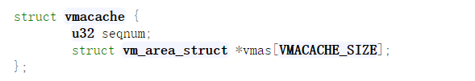

CVE-2018-17182 VMA use after free 复现笔记
漏洞描述
An issue was discovered in the Linux kernel through 4.18.8. The vmacache_flush_all function in mm/vmacache.c mishandles sequence number overflows. An attacker can trigger a use-after-free ( and possibly gain privileges ) via certain thread creation, map, unmap, invalidation, and dereference operations.
意思大概是在Linux内核4.18.8中的vmacache_flush_all函数中的对于seq number的溢出处理不适当导致的UAF漏洞，可以导致提权。影响的Linux发行版有前置知识
Linux 虚拟内存系统
Linux内核主要由mm_struct结构体来进行管理，如下图
mm_struct在task_struct进程描述符中被称为内存描述符，他是一个可执行程序的内存结构概要.如上图所示，它存储了内存各个内存端的起始位置和结束位置，进程使用的物理内存页的数量，进程使用的虚拟地址空间等信息。在内存描述符内部，还有两个内存管理的重要结构：virtual memory areas和page tables。下图就是Gonzo的内存区域示意图：
每一个virtual memory area（VMA）都是一段连续的虚拟内存地址，这些内存区域绝不会重合。一个vm_area_struct描述一个内存区域，包括了它的起始地址和结束地址，内存访问权限标志位，以及一个vm_file字段（如果有该字段的话，用来指定哪个文件映射到了该内存区域）。进程内存布局中除了内存映射段外的每一个内存段都对应一个VMA。这种方式尽管在X86机器上很常见，但这并不是硬性要求。VMA们并不关心它们对应的是哪个段。
一个程序的VMA们都是作为一个链表存在于内存描述符的mmap字段中的，并且按照虚拟地址进行了排序，并且是一个以mm_rb为根节点的红黑树。采用红黑树的数据结构是为了方便内核给定虚拟地址后快速查找对应的内存区域。当你读/proc/pid_of_process/maps这个文件时，内核就是简单的遍历进程的VMA链表并挨个打印。新的vma缓存机制
内核在3.16版本之后对vma的查找进行了优化，在task_struct中加入了一个vmmacache数组和一个32位的vmcache_seqnum值，在mm_struct结构中加入了一个32位的vmacache_seqnum值，并且在此基础上定义了一系列的操作函数。在4.18.8内核源代码中体现在task_struct中的vmacache成员.
- vmacache
- mm_struct
基于此基础上定义的操作函数需要了解的有- vmacache_invalidate
此函数将mm_struct里面的vmacache_seqnum自增一，随后检查是否溢出，如果发现溢出为0，则调用vmacache_flush_all()函数，由前面可知漏洞就出现在这个函数中。- vmacache_flush_all
在这个函数中，对于单线程的进程会直接返回，如果不是单线程则会对每个进程进行查找，直到找到对应的进程描述符，然后调用vmacache_flush对当前的进程描述符进行缓存清理。- vmacache_flush
此函数对进程描述符中的vmacache成员的vmas成员进行清零。- vmacache_valid
此函数会检查mm_struct中的vmacache_seqnum和task_struct中的vmacache.seqnum是否相同，如果不相同则使得后者等于前者，随后再调用vmacache_flush清理task_struct的缓存列表。- vma_find
此函数根据虚拟地址addr来查找对应的vma结构体。先是调用vmacache_find函数看看在进程描述符中的vmacache中有无符合的，找到直接返回vma结构的地址，如果没有找到即使用红黑树算法去寻找，找到之后使用vmacache_update函数将找到的vma结构加入缓存中。- vmacache_find
此函数作用是在vma的缓存列表中寻找addr命中的vma结构，首先调用vmacache_valid，在其中会检查current->vmacache_seqnum是否等于current->mm->vmacache_seqnum，如果之前有过调用vmacache_invalidate，在这里会直接去调用vmacache_flush函数，刷新task_struct的vmacache链表之后会返回null。漏洞触发思路
在mm_struct的seqnum发生溢出之后，会调用vmacache_flush_all,但是由于是单线程所以不会把task_struct中的缓存列表给清空，里面还会保存之前存有的vma结构的指针，在vmacache_valid函数被触发之前，立即申请一个新的线程，这个时候原线程task_struct里面的seqnum还为0xffffffff，并没有被更新为0，虽然新建立的线程自己有一个单独的task_struct, 但是是共享同一个mm_struct的，这个时候在新创建的线程之中再将mm_struct的seqnum增加为0xffffffff，然后退出这个线程，回到原先的线程中，原先的线程中的vmacache数组里面存在已经释放了的vma的引用，而且task_struct的seqnum和mm_struct的seqnum又相等了，从而绕过vmacache_valid的检查。这样UAF就达到了。
还有一个问题没有解决，我们要在libc的层次使用什么函数才能改变seqnum的值？答案是mmap系统调用和munmap系统调用。- 带MAP_FIXED的mmap函数的代码分析
首先我们得先对MAP_FIXED标识有一个大概的认识，如果我们使用带有MAP_FIXED标识的mmap函数去映射某一虚拟地址的内存区域分配一个新的vma结构A，则在内核中会检查是否存在和A重合的vma结构B，如果存在则会释放注销B，把其重新分配给A。
最终在内核代码中定为到mmap_region这个函数中，在这个函数中会调用do_munmap函数来注销对应的内存区域的vma结构。- munmap函数的代码分析
在do_munmap函数中会调用detach_vmas_to_be_unmapped函数，detach_vmas_to_be_unmapped函数中会调用vmacache_invalidate来使得mm_struct的seqnum加一,最后在remove_vma_list函数中会调用remove_vma函数来使用kemem_cache_free来释放vma结构。而且在do_munmap一开始就会调用vma_find，而vma_find又会调用vmacache_validate，所以每次调用do_munmap函数会更新vmacache或者清空它。Exp分析
漏洞利用代码: https://github.com/jas502n/CVE-2018-17182
漏洞发现者主要写了4份代码，分别是puppteer.c puppet.c vmacache_helper.c suidhelper.c。 其中vmacache_helper.c是一份帮助我们理解和调试的辅助驱动代码。其实现了一套ioctl系统来辅助漏洞的利用，定义了vmacache_debug_dump()来实现dump当前mm结构的信息，以及ioctl的SEQUENCE_BUMP选项可以快速增加vm_struct的seqnum的值。
在puppet.c中使用CHEAT这个宏来控制是否使用vmacache_helper驱动提供的测试接口。
- puppeteer.c代码分析1
puppeteer是主进程，所以我们首先分析这个，在puppeteer.c的main函数中定义了
control_fd_pair[2], control_event_fd，这两个东西用于puppteer和puppt的进程通信。eventfd函数使用EFD_SEMAPHORE标识创建了一个为读取新文件提供的类似于信号量的语义描述符，在内核中，内核会创建一个对象，对象中维护一个uint64_t的计数器，eventfd的第一个参数即为这个计数器的初始化值，在这里被初始化为0。当计数器为0时且eventfd被EFD_SEMAPHORE标识时，对其使用read系统调用会使得进程被阻塞，知道计数器变为非0值。对其使用write系统调用，计数器会加上buf中的8字节的整数值，这个会导致计数器值的变化，会使得被阻塞的进程恢复运行。在这里control_event_fd的作用是在主进程中实现了将fakevma伪造完之后发送信号即调用sync_add让子进程继续去触发缺页异常，从而控制执行流程。eventfd详情参见
main函数还使用socketpair对control_fd_pair进行初始化，socketpair定义了双向的套接字，子进程puppet可以将注册的bpf_map传回puppeteer，至于bpf_map是什么我们之后再讲。之后又在子进程执行execl(“./puppet”, “puppet”, NULL)之前将control_fd_pair[1]重定向为标准输入，将control_event_fd重定向为标准输出。socketpair详情参见- puppet.c代码分析
puppet全篇用的都是直接系统调用，没有通过libc，这是因为libc通常会自己分配一些存储空间，这样的话或许会对我们mmap的操作产生影响。在_start函数中，也定义了一个sync_fd，通过eventfd系统调用创建，这个sync_fd主要是阻塞puppet直到线程执行完毕。
_start函数首先通过mmap分配了FAST_WRAP_AREA地址的三个内存页用来作为sequence_target函数累加mm_struct的seqnum。
带有MAP_FIXED标识的mmap函数我们前面已经分析过了，如果去申请第一页的映射则会造成munmap第一页，seqnum增一，如果去申请中间页，则会造成munmap第一页和第三页，seqnum增二。sequence_target用于将mm_struct的seqnum增加到指定值。
在这里sequence_target将seqnum增加至0x100000000 - VMA_SPAM_COUNT/2之后，离溢出还有VMA_SPAM_COUNT/2个，随后又使用mmap在VMA_SOAM_AREA地址开始分配VMA_SPAM_COUNT个内存页，之后又munmap释放了VMA_SPAM_COUNT/2个内存页使得mm_struct的seqnum发生溢出，之后立马调用自己的thread_create函数来创建一个新的进程，来恢复seqnum的值重新为0xffffffff和task_struct的seqnum为一致。注意在创建线程之前，seqnum发生溢出的时候由于是单线程，所以task_struct的vmcache的vma数组列表中还保存着最后一个被释放的内存页的vma结构的地址，这样就给了我们UAF的条件。在创建线程之后有一个sync_dec(sync_fd)用来对sync_fd进行read操作以至于使得puppet源线程阻塞，等待新的线程执行完毕。
我们再来看看新线程的主要实现是在child_main函数中,在这里首先是把之前还剩下的在VMA_SPAM_AREA地址后面的VMA_SPAM_COUNT/2个内存页给munmap掉，这样我们会把整个的vma slab全部变成free，从而将这个slab释放会伙伴系统，至于slab算法，详情参考：https://blog.csdn.net/lukuen/article/details/6935068。
然后在这里我们见到了bpf_map，bpf其实就是耳熟能详的网络包过滤器，这个功能被集成在Linux内核中作为一个驱动模块，但是在这里并不是为了过滤网络包，而是通过这个bpf_map我们可以在内核中通过slub分配很多内存并且可以任意修改，这样就可以将包含着我们源线程vmacache缓存数组中没有flush的vma结构的一整页全部申请出来，这样就可以通过bpf_map去修改还没有flush的vma结构，之后我们通过出发缺页异常，回源线程中调用我们这个vma结构的异常处理程序，从而最终完成执行流程的劫持。我们使用sendfd(0, bpf_map)讲bpf_map传回puppteer进程中。 在退出新线程之前，我们再通过sequence_target将mm_struct的seqnum恢复至0xffffffff，接着使用sync_add(sync_fd)取消源线程的阻塞。
回到源线程，新线程执行完毕后，通过对sync_fd进行写操作，在内核中会对0x7fffffffd000内存页进行copy_from_user操作，这里为了避免这个页已经被映射到，故意使用比较高的地址，这样copy_from_user就会失败，触发PAGE_FAULT。
__do_page_fault中会获取地址所对应的vma，所以会调用find_vma函数，find_vma中又会调用vmacache_find函数。
在这里，由于bpf会将分配的内存清空，这个特性正好帮助我们触发warn_on_once,以此将信息dump到dmesg中泄露内核空间地址，从而绕过kaslr。在触发WARN_ON_ONCE之后会继续执行，因此这里的vma仅仅返回null，并且回到红黑树查找，最后也没有找到返回NULL，这个时候缺页中断流程会给用户进程发送SIGSEGV，并不会将系统崩溃(此处有点疑问，为什么puppet进程收到SIGSEGV信号却不会被杀掉)。随后puppet进程通过sync_dec(1)来使自身阻塞，在puppeteer进程将vma准备好之后，并且通过bpf_map写入之后，才得以继续执行对event_fd的读操作也就是对0x7fffffffd000的引用导致PAGE_FAULT，以此来劫持程序执行流程。- puppeteer.c代码分析2
在puppeteer中，当puppet进程成功触发warn_on_once以及得到bpf_map之后，便会通过以上代码找到相关的地址信息。rax是UAF的vma结构的地址，rdi是mm_struct的地址， r8是eventfd_fops的地址，还有内核栈的地址。
一开始通过已经得知的vma_kaddr来求此结构在内存页中的偏移offset，但是由于bpf_update的时候会自动加上bpf_map_header的偏移，所以在这里减去了0x90。
在伪造vma结构的时候，将vm_start和vm_end改为一段没有被映射的区域，在这里仍然是0x7fffffffd000~0x7fffffffe000。这样当我们引用这块内存时会触发PAGE_FAULT，当调用vmacache_find函数时就会从指针列表中找到我们伪造的vma结构，然后find_vma就会返回伪造的vma结构的指针给do_page_fault函数，在do_page_fault函数中又调用handle_mm_fault函数，执行流程如下：
page_fault => do_page_fault => do_page_fault => handle_mm_fault => __handle_mm_fault => handle_pte_fault => do_fault => do_read_fault => __do_fault => vma->vm_ops->fault()。
这样就会去执行伪造的vma结构中我们布置的vm_ops中的fault函数。vm_ops的值为vma_kaddr + offsetof(struct vm_area_struct, vm_private_data) - offsetof(struct vm_operations_struct, fault)，这样在调用vma->vm_ops->fault的时候，就是vma_kaddr + offsetof(struct vm_area_struct, vm_private_data)即vm_private_data，所以在这里vm_private_data被赋值为eventfd_fops-0xd8da5f。
此处的gadget的汇编为
call __x86_indirect_thunk_rax即为call rax，所以我们要控制rax，调试中发现r13就为vma_kaddr，所以在vma_kaddr+0x70的地方即.share.rb_subtree_last成员赋值为vma_kaddr + offsetof(struct vm_area_struct, shared.rb.rb_parent_color) - 0x88，这样最后rax的值为shared.rb.rb_parent_color的值，所以在shared.rb.rb_parent_color赋值为eventfd_fops-0xd9ebd6，跳转至下一个gadget的汇编代码如下。
调试发现rdi为vma_kaddr，所以rax就为vma_kaddr+0x20,rdi位vma_kaddr+0x28，所以在fake_vma中赋值为vm_rb.__rb_parent_color=eventfd-0xd92ce0即run_cmd gadget的地址，vm_rb.rb_left为kernel_cmd的地址，这样rax为run_cmd的地址，rdi即第一个参数为kernel_cmd的地址，kernel_cmd为一串字符串/tmp/%1，run_cmd会根据这个路径作为参数以root的权限来执行里面的命令，在这之前/tmp/%1已经被写入要被执行的命令。
大概的意思是位suidhelper程序设置s位，使其能够成功执行setuid(0)和setgid(0)，并弹出一个具有root权限的shell。
至此大概的exp思路分析完毕。